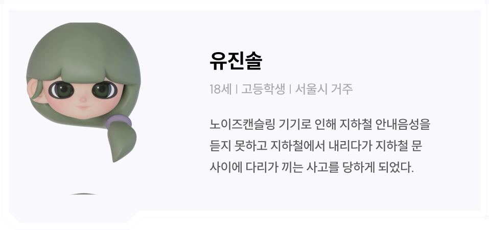
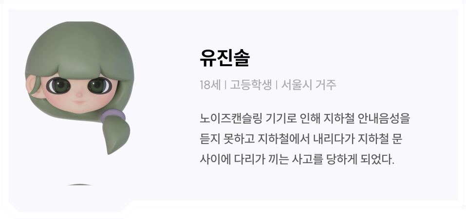

노이즈캔슬링 사고 예방
VR 체험생활 속 '노이즈캔슬링'의 위험성 증대
‘노이즈캔슬링’ 기기를 착용하는 사용자가 증가함에 따라 점차 안전 판단이 흐려지고 사고 위험이 증가하기 시작합니다. 기기를 착용한 상태에서는 사고 위험에 그대로 노출되거나 위험 경고 안내 사항을 전달 받지 못하는 등 부주의 사고가 빈번하게 일어나며 문제의식을 가지지 못하게 되는 현상이 발생합니다. 따라서 저희는 이러한 문제를 개선하기 위해 노이즈캔슬링 관련 사건·사고들을 경험하여 사용자가 위험성을 자각할 수 있도록 새로운 VR 콘텐츠를 기획하였습니다.
 
